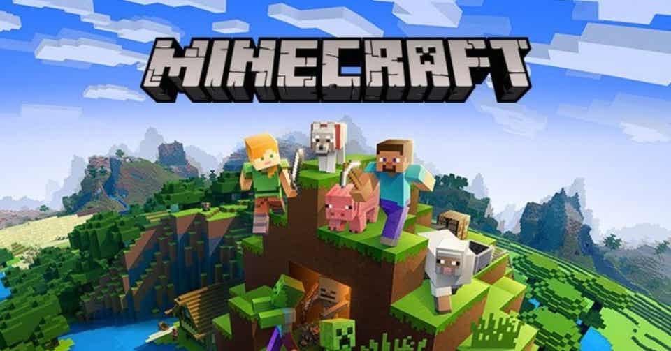
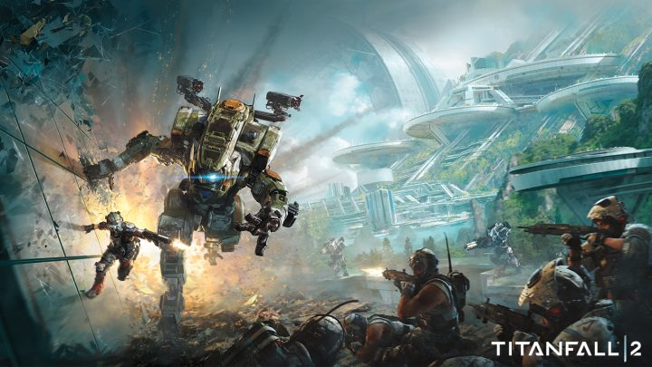
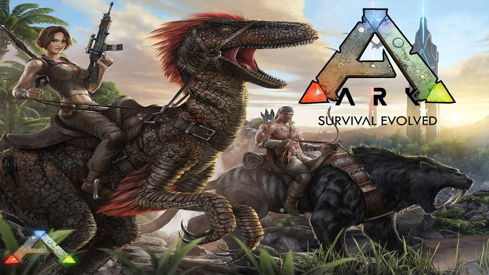

趣味その1 ゲーム
ここでは、僕が普段やっているゲームを紹介していきます。
バトルフィールドV

このゲームは、第二次世界大戦を題材にした1人称視点のシューティングゲーム（FPS）。時代を象徴する武器、ビークル、航空機を手にしてリラルタイムで破壊とカオスを繰り広げる、究極のサンドボックスが楽しめる。 さらに、シングルモードでは第二次世界大戦の知られざる戦場を舞台に、それぞれに異なる主人公の視点から物語を体験することができる。
Minecraft

サバイバル生活を楽しんだり、自由にブロックを配置し建築等を楽しむことができる。ゲームの世界は、立方体として土や石、鉱石、原木、水、溶岩などのさまざまな種類のブロックで構成されており、プレイヤーは、予めシードを元にしてアルゴリズムによって生成された無限に続くブロック状の世界を探索し、原料を抽出して加工し、構造物や装備品をつくることができる。
タイタンフォール2

2014年に発売された『タイタンフォール』の続編。時は未来、宇宙の果ての開拓宙域「フロンティア」を舞台に、プレイヤーは7m級の戦闘ロボット「タイタン」のパイロットとして,非搭乗時にはジェットパックとパルクール技術による戦術を、搭乗時には力強さによる戦略を駆使して戦闘する。
ARK

巨大な恐竜との戦いや飼育、食料や体温管理などのサバイバル要素、最大100人の多人数マルチプレイ、拠点などを構築するクラフト機能など、様々な要素を盛り込んだオープンワールド作品として、世界中で非常に高い評価を獲得し、今でも熱い盛り上がりを見せている。